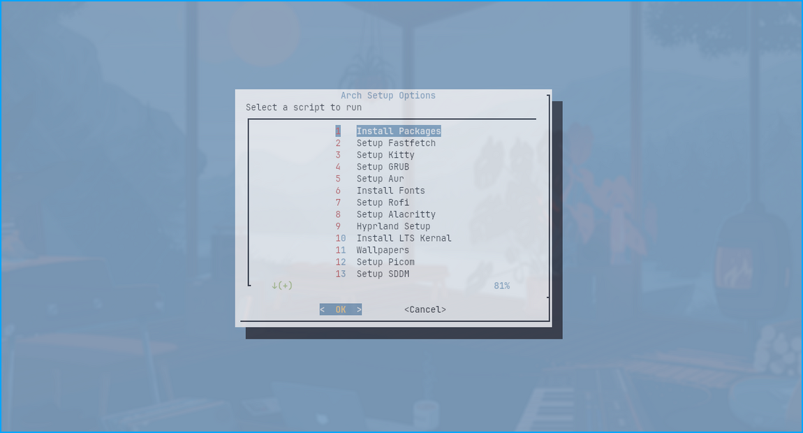
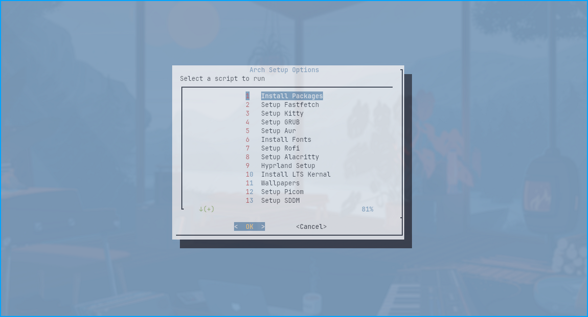

Features

- Quick Setup: Automates the installation of essential packages for a smooth start.
- Enhanced TUI Navigation: A color-themed TUI for intuitive navigation and setup.
- Preconfigured Scripts: Tailored setups for popular window managers and tools, with options like Dwm, Hyprland, i3wm, and more.
- Continuous Updates: Regular updates and improvements driven by user feedback.